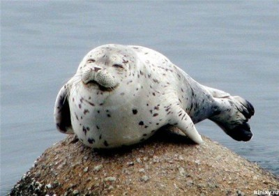

Ларга (пёстрая нерпа)
Ларга, или пёстрая нерпа, или дальневосточная нерпа (лат. Phoca largha) — вид тюленей, находящийся в близком родстве с обыкновенным тюленем и имеющий схожую внешность.
Внешний вид
Окраска меха светлая, пёстрая, снизу белёсая или светло-серебристая, сверху темнее, с некрупными коричневыми или чёрными пятнами. Самцы достигают в длину 1,7 м, самки 1,6 м.
Распространение
Обитает в северном Тихом океане от Аляски до Японии и дальневосточного побережья России. В течение неледового периода распределение ларги приурочено к прибрежным районам. Тесная связь в нагульный период с сушей выражается в образовании береговых лежбищ. Наиболее крупные летне-осенние лежбища расположены на о. Сахалин (около 60) и западном побережье Камчатки (около 30), где численность залегающих на отдельных лежбищах тюленей достигает 4-5 тыс. особей. Определяющими факторами при образовании лежбищ являются состояние кормовой базы и безопасность тюленей при нахождении на суше. Численность ларг на лежбищах претерпевает существенные сезонные и суточные изменения, в основе которых лежат причины трофического и гидрометеорологического характера. Распределение в ледовый период прямо связано с наличием льдов. В основе особенностей распределения в зимнее время лежит ледовая обстановка и трофический фактор - обилие и доступность предпочитаемой пищи. Весеннее распределение на севере Японского, в Охотском и Беринговом морях этого пагофильного вида зависит в большей степени от типа льда, на которых протекают наиболее важные периоды годового биологического цикла: рождение и выкармливание потомства, спаривание и начальный этап линьки. Предпочтение в это время ларга отдает обломкам ледовых полей и крупнобитым белым льдам.
Особенности поведения
Относится к тюленям ледовой (пагофильной) формы выживания.
Зимне-весенняя пора
В периоды спаривания пятнистые тюлени вылезают из воды на льдины, где с февраля по март рождается потомство.
Летне-осенняя пора
Вне брачных периодов ларга преодолевает большие расстояния и достигает в том числе широт, расположенных далеко на юге. В неледовый период предпочитает держаться в шельфовой зоне моря, а с началом хода лососёвых сосредотачивается у рек, куда идёт на нерест рыба. Например, из лимана Амура ларга в погоне за лососевыми (горбуша, кета) поднимается довольно высоко вверх по реке, заходя в озера пойменной системы.
Источник